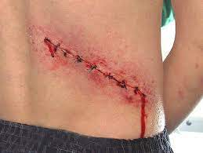

Este relato también tienen infinidad de variantes, pero el principio es el mismo:
un hombre se deja seducir por una mujer hermosa –o tiene sexo con una meretriz–.
A la mañana siguiente, se despierta sin recuerdo alguno de la noche anterior, y descubre una sospechosa cicatriz
a la altura del riñón, víscera que estará entonces a merced del mejor postor el mercado negro.
La moraleja no puede ser más clara, ¿verdad? A veces en lugar de despertarse sin un riñón se despierta con un mensaje:
"Bienvenido al club del sida". Y casi siempre ha desaparecido también la cartera, con su documentación y dinero.
Esta leyenda del tráfico de órganos en ocasiones se da sin ni siquiera intercambio carnal.
Hubo una época en que se decía que perdías un riñón si te atrevías a acceder al probador de según
qué tiendas, y no por el precio de la ropa, sino que lo del riñón era literal.
Alguien te contaba de alguien que había entrando en una tienda y su pareja, al ver que no salía, se asoma y le dicen que allí no hay nadie.
El marido, o la amiga, o mujer o novia en cuestión acude a la policía que, al llegar, encuentra a la víctima atada
y amordazada y a punto de extraerle un riñón para el tráfico de órganos.